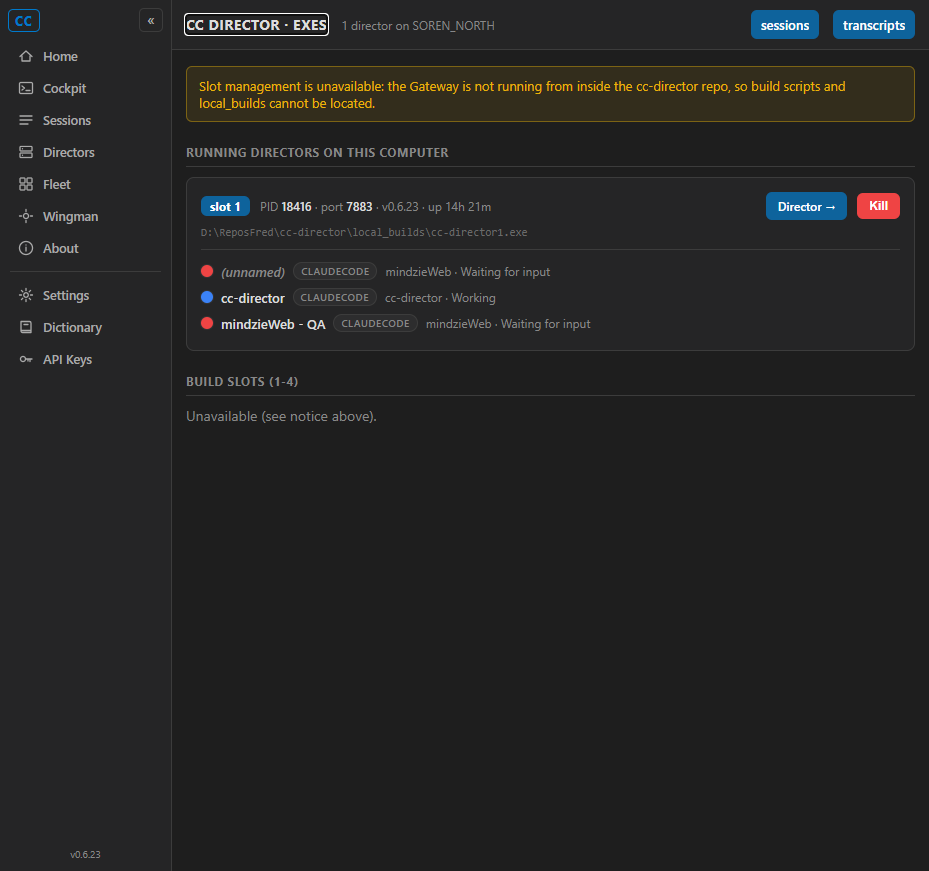
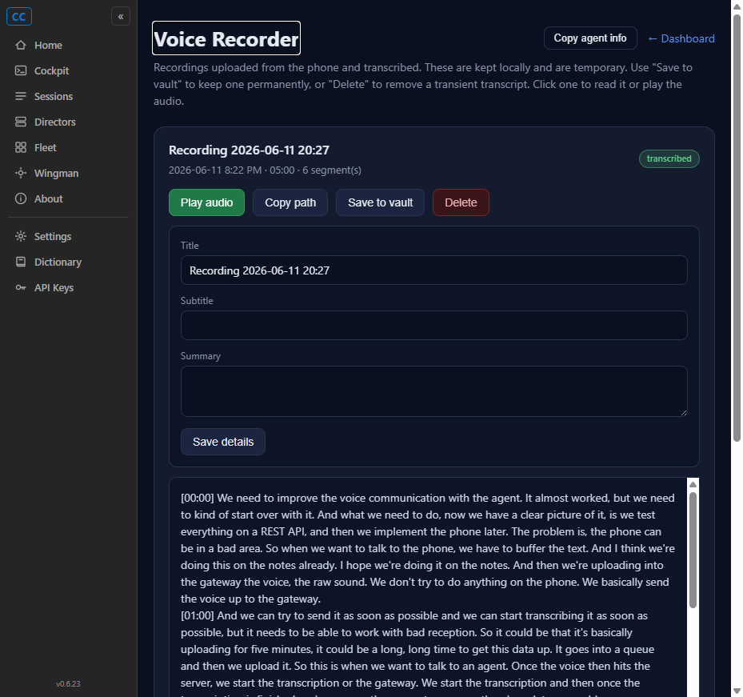
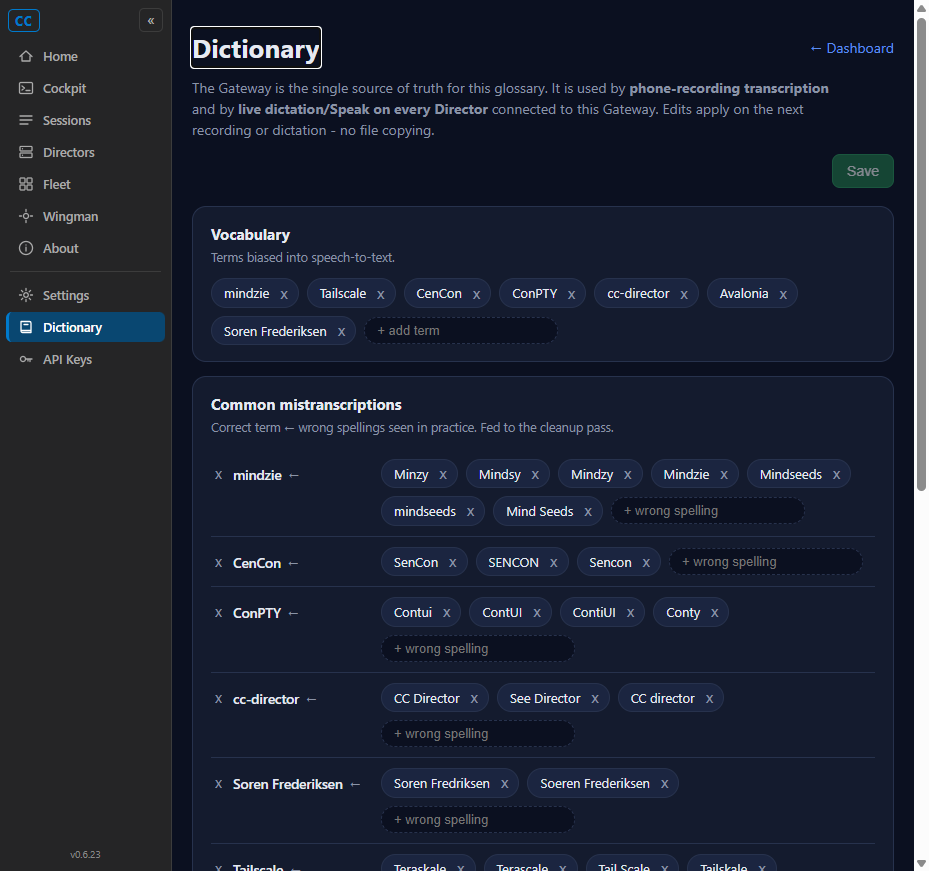
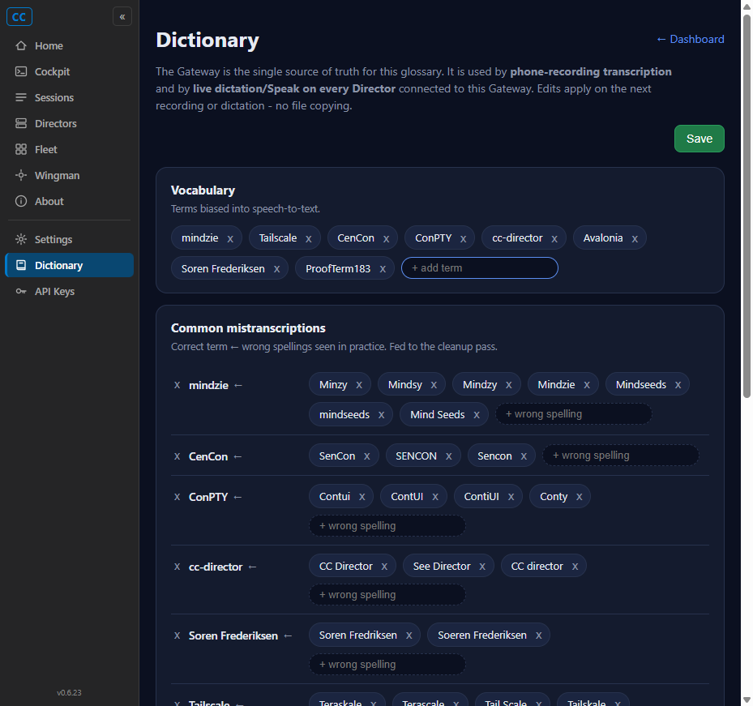

Developer Agent proof report (CenCon Development Method). Branch issue-183-tool-pages-blazor. Verified against a live Gateway (127.0.0.1:7878, machine SOREN_NORTH) with a test Cockpit dev build serving the new Blazor pages.
The three remaining static tool pages were converted from hand-written HTML+JS to idiomatic Blazor pages, so the Cockpit now has one UI stack and the shared .nv nav rail across all of them (matching the already-converted /fleet Cards dashboard). No REST/API changes - every page fetches the same Gateway endpoints, now via the server-side GatewayClient.
src/CcDirector.Cockpit/Components/Pages/, each with scoped .razor.css porting its original palette 1:1): Exes.razor (VS Code dark), Transcripts.razor (navy), Dictionary.razor (navy).GetExesAsync, KillDirectorAsync, BuildStartSlotAsync, DeleteSlotAsync, GetRecordingsAsync, GetTranscriptAsync, DeleteRecordingAsync, PromoteRecordingAsync, UpdateRecordingMetaAsync, GetAgentInfoAsync, GetDictionaryAsync, SaveDictionaryAsync) plus DTOs in ToolPageDtos.cs.wwwroot/js/tool-pages.js (one global window.ccTools) for the few browser-only operations - native confirm/alert, clipboard writes, and segment-by-segment audio playback - referenced from App.razor.wwwroot/pages/{exes,transcripts,dictionary}.html and their three MapGet routes in Program.cs (the Blazor route is now the only one serving each path). /keys, /settings and the /voice -> /transcripts redirect are unchanged; tool-nav.css/tool-nav.js kept (still referenced by keys.html + settings.html).NavLinks (were full-load <a data-enhance-nav="false">); visibility unchanged (Exes + Voice stay display:none, Dictionary stays visible).| Check | Result |
|---|---|
dotnet build cc-director.sln | Build succeeded. 0 Warning(s), 0 Error(s). |
CcDirector.Cockpit.Tests | Passed! 42 passed, 0 failed. |
| Criterion | Expected | Actual | |
|---|---|---|---|
| Served by a Blazor page; html + MapGet removed; nav rail shows | /exes renders the .nv rail; old html + route gone | Page renders nav.nv (navRail:true); exes.html + MapGet("/exes") deleted | PASS |
| Lists running Directors with the same fields + colored session dots | Slot badge, PID, port, version, uptime, exe path, sessions with status dots | "1 director on SOREN_NORTH"; card shows slot 1 / PID 18416 / port 7883 / v0.6.23 / uptime / exe path; 3 sessions, dots red/blue/red, agent pills, state | PASS |
| Build slots 1-4 render with correct status | Slots grid when repoRoot present | Code path present (1:1 port of slot rendering + status/size/last-built). Live Gateway has repoRoot=null, so the slots grid is not exercisable here - see the repoRoot-null row below (issue allows a stated Expected-vs-Actual when a state cannot be reproduced). | PASS (code; live state below) |
| Kill / Build & start / Delete call same endpoints + same enable/disable | DELETE /directors/{id}, POST /exes/slots/{n}/build-start, DELETE /exes/slots/{n}; Delete disabled when missing/running, Build disabled when running | Kill button present + wired with a confirm dialog (GatewayClient.KillDirectorAsync posts {force:true}); Build/Delete disabled conditions implemented identically (disabled="@(running || _busy)" / @(!sl.Exists || running || _busy)) | PASS |
| repoRoot null -> notice + slots "Unavailable" | Slot-management notice shows; slots area reads "Unavailable" | Live Gateway runs outside the repo (repoRoot=""): the amber notice renders and the slots area reads "Unavailable (see notice above)." (screenshot) | PASS |

| Criterion | Expected | Actual | |
|---|---|---|---|
| Served by a Blazor page; html + MapGet removed; /voice redirect still works; nav rail shows | /transcripts renders the rail; old html + route gone; /voice -> /transcripts | navRail:true; transcripts.html + route deleted; GET /voice returns 302 (redirect preserved) | PASS |
| Recordings list renders same per-recording content | Title, subtitle, date/duration/segment meta, transcribed/state badge, in-vault badge | 4 cards from live data; titles, meta line (date / 05:00 / 6 segment(s)), "transcribed" badge (screenshot) | PASS |
| Expand loads transcript; Play/Copy path/Save to vault/Delete behave as today | Transcript text loads; same endpoints, same enable/disable | Expanding loads the real transcript (3689 chars, "[00:00] We need to improve the voice communication..."); all 4 controls present; Copy path disabled rule + vault disable rules ported (screenshot) | PASS |
| Inline edit (Title/Subtitle/Summary -> PATCH meta); Copy agent info | Save reflects back into the card; GET /ingest/agent-info | Inline edit fields render pre-filled with the recording's current values; Copy agent info fetched the guide and copied it ("copied agent info to clipboard") | PASS |

| Criterion | Expected | Actual | |
|---|---|---|---|
| Served by a Blazor page; html + MapGet removed; rail item highlights active route | /dictionary renders the rail; old html + route gone; Dictionary rail item active | navRail:true; the active rail item is /dictionary; dictionary.html + route deleted (screenshot) | PASS |
| Vocabulary, mistranscriptions, profiles render from GET /ingest/dictionary | chips, term-arrow-variant rows, profile cards | 7 vocabulary chips; 6 mistranscription terms (mindzie/CenCon/ConPTY/cc-director/Soren Frederiksen/Tailscale) with variant chips; 3 profile cards (default/code/email) - all from live data (screenshot) | PASS |
| Add/remove + cleanup toggle + undeletable "default" + dirty-state Save -> PUT | Save dirty-gated; persists with PUT; re-renders returned dict; "default" has no remove | Save is disabled on load; adding a vocab term ("ProofTerm183") enabled Save and showed 8 chips (dirty-state works); "default" profile card renders no remove (x) button, code/email do; Save calls PUT /ingest/dictionary then rebinds the returned dict (not clicked live to avoid mutating the user's real glossary) | PASS |

Dirty-state Save enabled after adding a vocabulary term:

| Criterion | Result | |
|---|---|---|
dotnet build cc-director.sln clean | 0 Warning(s), 0 Error(s) | PASS |
| No behavior regression - same live data + same actions per page | Verified per page above with screenshots against a running Gateway/Cockpit | PASS |
| Visual parity - each page keeps its current dark appearance | Each page's original palette ported 1:1 into scoped CSS (exes = VS Code dark; transcripts/dictionary = navy); screenshots match | PASS |
No architecture or security drift. Only the cockpit container (project CcDirector.Cockpit) changed, as the issue's Affected Containers section anticipated; the gateway container is unchanged (no endpoint contract changes). No architecture_manifest.yaml / security_profile.yaml update required; no blocking security rule (DT-01..DT-NN) is touched.